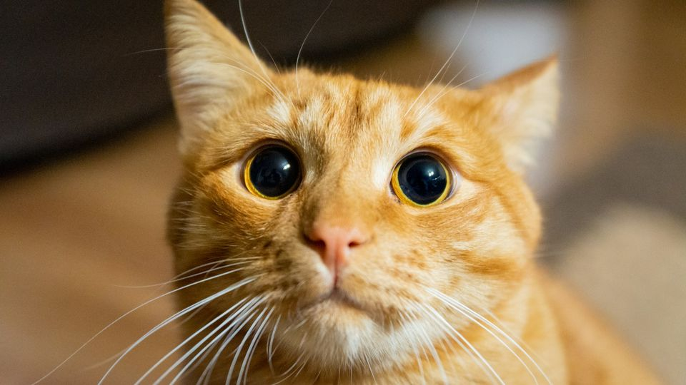

CERTIFICACIONES
-
Fundamentos de Python 1
Programador de Python Entry Level certificado por Cisco Networking Academy


Proyecto "Cat-Alog" para registrar y buscar variedad de Gatos - Diego Garrido, Matias Duncker
Licenciado en Ciencias de Veterinaria - Pontificia Universidad Catolica de Chile 2020-2025
Estudiante de Ingenieria en Informatica (Desarrollo de Software) - DUOC UC 2025-Presente
Programador de Python Entry Level certificado por Cisco Networking Academy